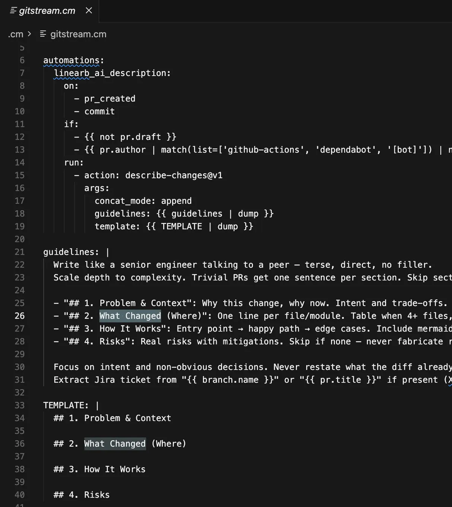

A four-step PR description for faster code reviews
Originally posted on LinkedIn, July 29, 2026.
The bottleneck has moved from writing code to reviewing it. A large part of a development team's work is now judging what was built and how it was built.
One thing that has made this easier for me and my team is giving the agent that writes the PR Description a four-step structure. This works whether the agent runs as a command in Cursor or through LinearB's GitStream:
- What problem are we solving?
- What changed, where, and in which files?
- How does it work in practice? Describe the flow.
- What are the risks?
When the PR Description includes this level of detail, understanding the code becomes much faster and easier. I already know what I expect to find in the code itself. Sometimes I can even spot architectural issues or risks raised by the agent before reading a single line of code.
This worked so well for us that when I shared it with the other team leads, they decided to adopt it across all of R&D for every new PR.
